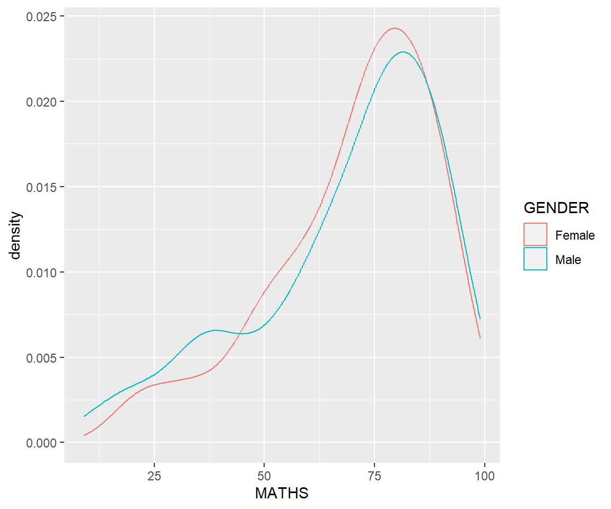
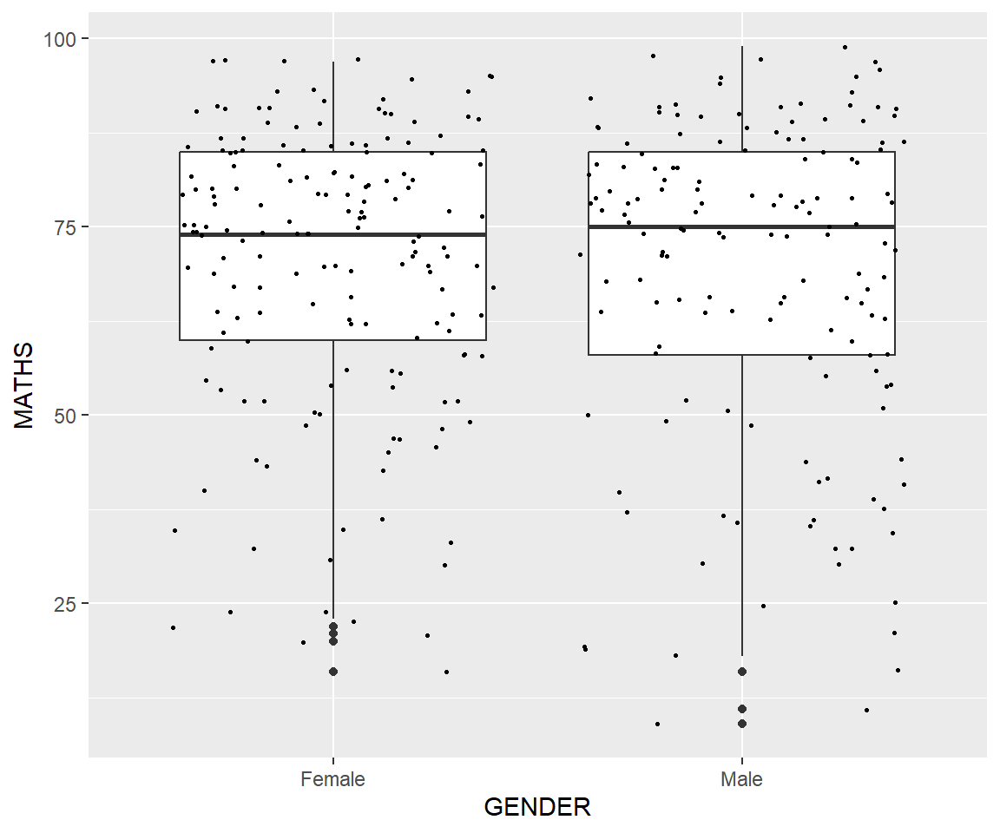

Press to toggle code
pacman::p_load(tidyverse)This is a hands-on exercise following this guide as a requirement under the class ISSS608: Visual Analytics and Applications.

The function p_load() from pacman checks if inputted packages are already installed. If they are, they are loaded into the R environment. Otherwise, they are installed then loaded in. The code chunk below runs p_load() for tidyverse.
pacman::p_load(tidyverse)The code chunk below uses read.csv() to load in the CSV file “Exam_data.csv” into the R environment.
exam_data <- read.csv('data/Exam_data.csv')ggplot2ggplot2hist(exam_data$MATHS, col ='#e3879e')ggplot(data=exam_data, aes(x = MATHS)) +
geom_histogram(bins=10,
boundary = 100,
color="black",
fill="#e3879e") +
ggtitle("Distribution of Maths scores")Geometric objects refer to the actual marks placed on the plot. A plot must contain at least one geometric object in order to have an output. There’s no limit on the number of geometric objects, all you need to do is add them to the plot using +. The image below contains samples of geometric objects and their visualizations.
geom_bar()The code chunk below uses the geometric object geom_bar() which produces a bar plot of the frequencies of the variable ‘RACE’ as specified by aes(x = RACE).
ggplot(data = exam_data,
aes(x = RACE)) +
geom_bar(fill = '#e3879e')geom_dotplot()The code chunk below makes use of the geometric object geom_dotplot() which produces a dot plot of the variable ‘MATHS’, which refers to math scores.
ggplot(data = exam_data,
aes(x = MATHS)) +
geom_dotplot(binwidth = 2.5,
dotsize = 0.5,
fill = '#e3879e') +
scale_y_continuous(NULL,
breaks = NULL) As you can see geom_dotplot() makes use of two arguments, ‘binwidth’ which refers to group ranges and ‘dotsize’ which scales the size of the dots. The function scale_y_continuous() is also added to turn off the y-axis by setting to NULL.
geom_histogram()ggplot(data = exam_data,
aes(x = MATHS)) +
geom_histogram(bins = 20,
color="black",
fill="#e3879e") ggplot(data=exam_data,
aes(x = MATHS,
fill = GENDER)) +
geom_histogram(bins = 20,
color = "grey30") +
scale_fill_manual(values = c("#e3879e","#af7cb6"))geom_density()ggplot(data=exam_data,
aes(x = MATHS,
colour = GENDER)) +
geom_density()
geom_boxplot()ggplot(data=exam_data,
aes(y = MATHS,
x= GENDER)) +
geom_boxplot(notch=TRUE)ggplot(data = exam_data,
aes(y = MATHS,
x = GENDER)) +
geom_boxplot() + #<<
geom_point(position="jitter", #<<
size = 0.5) #<<
stat_summary()ggplot(data = exam_data,
aes(y = MATHS, x= GENDER)) +
geom_boxplot() +
stat_summary(geom = "point",
fun.y = "mean",
colour = "red",
size=4) Warning: The `fun.y` argument of `stat_summary()` is deprecated as of ggplot2 3.3.0.
ℹ Please use the `fun` argument instead.ggplot(data = exam_data,
aes(y = MATHS, x = GENDER)) +
geom_boxplot() +
geom_point(stat = "summary",
fun.y ="mean",
colour ="red",
size=4) Warning in geom_point(stat = "summary", fun.y = "mean", colour = "red", :
Ignoring unknown parameters: `fun.y`No summary function supplied, defaulting to `mean_se()`
geom_point()ggplot(data = exam_data,
aes(x = MATHS,
y = ENGLISH)) +
geom_point() 
ggplot(data = exam_data,
aes(x = MATHS, y = ENGLISH)) +
geom_point() +
geom_smooth(method = lm,
size = 0.5)Warning: Using `size` aesthetic for lines was deprecated in ggplot2 3.4.0.
ℹ Please use `linewidth` instead.`geom_smooth()` using formula = 'y ~ x'
Facetting generates small multiples (sometimes also called trellis plot), each displaying a different subset of the data.
Facets are an alternative to aesthetics for displaying additional discrete variables.
facet-wrap()The code chunk below produces a 2D matrix of ‘MATHS’ histograms as grouped by variable ‘CLASS’ using facet_wrap(~ CLASS) .
ggplot(data = exam_data,
aes(x = MATHS)) +
geom_histogram(bins = 20) +
facet_wrap(~ CLASS)
facet_grid()ggplot(data = exam_data,
aes(x = MATHS)) +
geom_histogram(bins = 20) +
facet_grid(~ CLASS)How do we create a trellis box plot of math scores per class grouped by gender?
ggplot(data = exam_data,
aes(y = MATHS,
x = CLASS)) +
geom_boxplot() +
facet_wrap(~ GENDER)
How do we put one panel on top of the other?
ggplot(data = exam_data,
aes(y = MATHS,
x = CLASS)) +
geom_boxplot() +
facet_wrap(~ GENDER, nrow = 2, strip.position = "right")The argument ‘strip.position’ sets the position of the facet group’s strip label.
How do we group by both ‘CLASS’ and ‘GENDER’?
ggplot(data = exam_data,
aes(y = MATHS,
x = GENDER)) +
geom_boxplot() +
facet_grid(GENDER ~ CLASS)How do you create a horizontal bar graph with a light blue background?
ggplot(data = exam_data,
aes(x = RACE)) +
geom_bar() +
coord_flip() +
theme_minimal() +
theme(panel.background = element_rect(fill = "lightblue",
color = "white"))How do you improve a normal bar chart?
ggplot(data = exam_data,
aes(x = RACE)) +
geom_bar() How do we add mean and median lines on the histogram plot and change fill colors?
ggplot(data = exam_data,
aes(x = MATHS)) +
geom_histogram(bins = 20,
color = "black",
fill = "lightblue") +
geom_vline(aes(xintercept = mean(MATHS)),
col = 'red',
size = 0.5,
linetype = "dashed")+
geom_vline(aes(xintercept = median(MATHS)),
col = 'black',
size = 0.5,
linetype = "dashed")How do you have a histogram show the distribution of English scores for all pupils in the background?
ggplot(data = exam_data,
aes(x = ENGLISH,
fill = GENDER)) +
geom_histogram(bins = 20,
color = "black") +
facet_wrap(~ GENDER)How to create a scatter plot with reference lines?
ggplot(data = exam_data,
aes(x = MATHS,
y = ENGLISH)) +
geom_point() +
geom_vline(aes(xintercept = 50),
col = 'grey',
size = 0.8,
linetype = "dashed") +
geom_hline(aes(yintercept = 50),
col = 'grey',
size = 0.8,
linetype = "dashed")